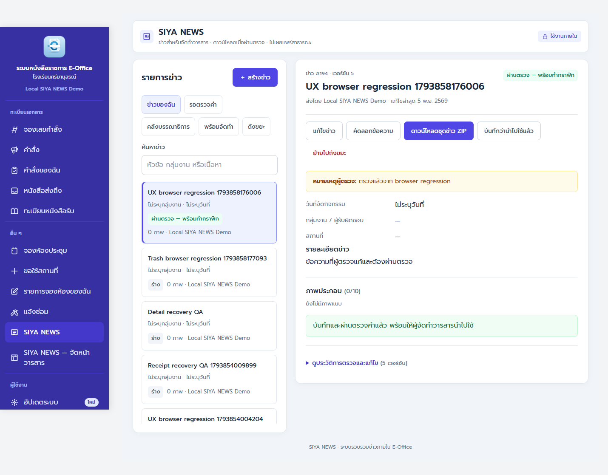
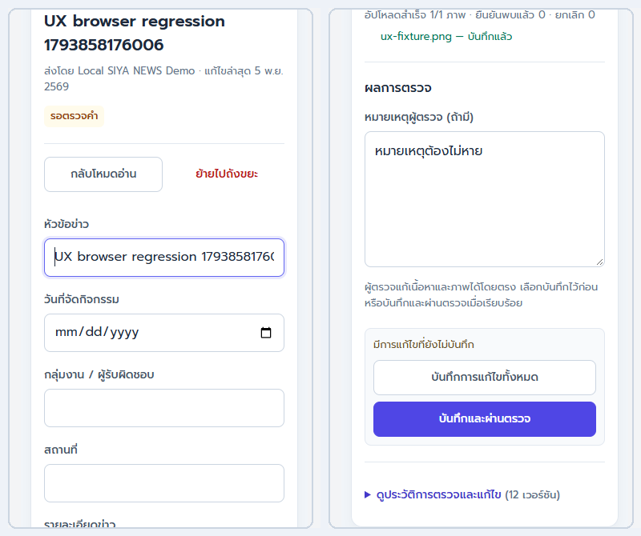
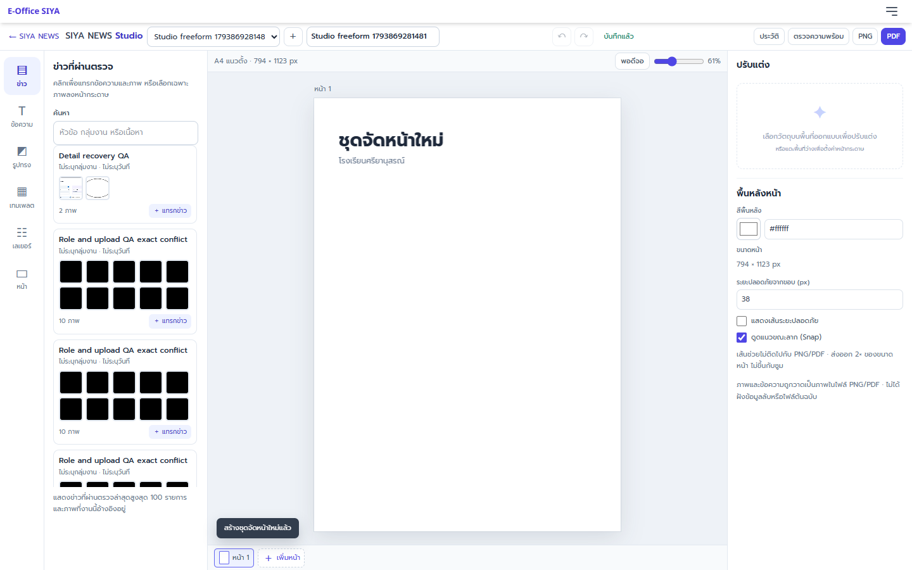
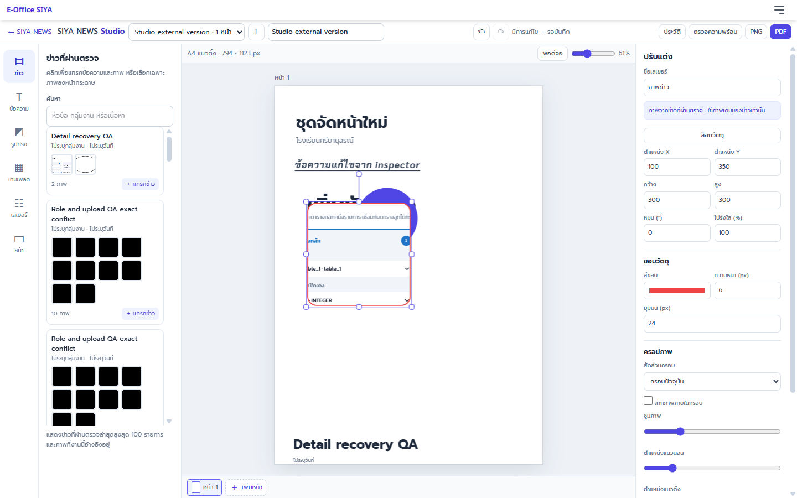
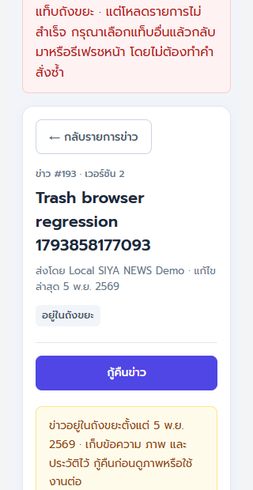

SIYA NEWS
ตั้งแต่ส่งข่าว ตรวจเนื้อหา จนถึงจัดหน้าวารสารและส่งออกไฟล์
ทำงานตามขั้นตอน ข่าวไม่หลุดคิว
SIYA NEWS เป็นพื้นที่ภายใน E-Office สำหรับรวบรวมและตรวจข่าวที่ใช้จัดทำวารสาร ไม่ใช่เว็บไซต์เผยแพร่ข่าวสาธารณะ
สิทธิ์ผู้ใช้งานและหน้ารายการข่าว
เมนูและรายการที่เห็นจะขึ้นกับสิทธิ์ที่ Admin มอบหมาย บัญชีเดียวรับได้หลายบทบาท ส่วน Admin ใช้งานได้ทุกบทบาท
| บทบาท | งานที่ทำได้ | รายการหลักที่เห็น |
|---|---|---|
| ผู้ส่งข่าว news_submit | สร้างร่างข่าวของตนเอง แก้ไขร่าง/ข่าวที่ส่งกลับ แนบภาพ และส่งตรวจคำ | ข่าวของฉัน · ถังขยะของตน |
| บรรณาธิการ / ผู้ตรวจคำ news_editor | อ่านคิวตรวจ แก้ข้อความ/ภาพ เพิ่มหมายเหตุ และบันทึกพร้อมผ่านตรวจ | รอตรวจคำ · คลังบรรณาธิการ · ถังขยะตามสิทธิ์ |
| ผู้จัดทำวารสาร news_producer | อ่านและดาวน์โหลดข่าว/ภาพที่ผ่านตรวจ ส่งออกชุดข่าว และใช้ Studio จัดหน้า | พร้อมจัดทำ · SIYA NEWS — จัดหน้าวารสาร |
| Admin | สิทธิ์ทั้งหมด และเป็นผู้มอบหมาย/ถอนสิทธิ์สมาชิก | ทุกส่วน |

12345- 1สร้างข่าว แสดงเมื่อบัญชีมีสิทธิ์ผู้ส่งข่าว
- 2แท็บรายการ เปลี่ยนระหว่างข่าวของฉัน, คิวตรวจ, พร้อมจัดทำ หรือถังขยะ
- 3รายการและค้นหา เลือกข่าวเพื่อดูหรือทำงานต่อ
- 4สถานะข่าว “ผ่านตรวจ — พร้อมทำกราฟิก” ใช้ในขั้นจัดวารสาร
- 5คำสั่งของบทบาท เช่น ดาวน์โหลดชุดข่าว ZIP หรือบันทึกว่านำไปใช้แล้ว
สร้างข่าว เขียนข้อมูล และส่งตรวจ
- เปิดเมนู SIYA NEWS แล้วกด ＋ สร้างข่าว ข่าวใหม่จะเริ่มเป็นสถานะ ร่าง
- กรอก หัวข้อข่าว, วันที่จัดกิจกรรม, กลุ่มงาน / ผู้รับผิดชอบ, สถานที่ และ รายละเอียดข่าว
- เขียนรายละเอียดให้ตอบคำถามว่า ใคร ทำอะไร ที่ไหน เมื่อไร และเกิดผลอย่างไร ใช้ชื่อบุคคล/กลุ่มงานให้ถูกต้อง
- กด บันทึกการแก้ไขทั้งหมด เพื่อเก็บร่าง การพิมพ์ในหน้านี้ ไม่มี autosave จึงควรบันทึกก่อนเปลี่ยนข่าวหรือออกจากหน้า
- แนบภาพที่ ＋ เพิ่มภาพ รองรับ JPEG, PNG, WebP ไม่เกิน 20 MB ต่อภาพ และไม่เกิน 10 ภาพต่อข่าว
- ใส่คำบรรยายและเครดิตภาพ เรียงภาพด้วยปุ่มลูกศร แล้วบันทึกอีกครั้ง
- เมื่อพร้อม กด บันทึกและส่งตรวจคำ ระบบบันทึกข้อมูลก่อนเปลี่ยนสถานะเป็นรอตรวจ
เขียนให้พร้อมตรวจ
- ใช้หัวข้อสั้น ชัดเจน บอกกิจกรรมหรือผลลัพธ์
- ตรวจวัน/สถานที่และชื่อผู้รับผิดชอบ
- เลือกภาพที่เกี่ยวข้องและมีสิทธิ์นำมาใช้
- อย่าใส่ข้อมูลส่วนบุคคลที่ไม่จำเป็น
ปรับข่าวหลังส่งแล้ว
ผู้ส่งแก้ได้ในร่างหรือข่าวที่ผู้ตรวจส่งกลับ หากแก้เนื้อหาหรือภาพของข่าวที่ผ่านตรวจ ข่าวจะกลับเข้าคิวตรวจ และผู้จัดทำจะยังใช้ไม่ได้จนกว่าจะผ่านตรวจใหม่
ใช้ตัวช่วยตรวจคำผิดอย่างมีวิจารณญาณ
- เปิดข่าวในโหมดแก้ไข แล้วกด ช่วยตรวจคำผิด
- อ่านข้อความยืนยันก่อนส่ง ระบบส่งเฉพาะหัวข้อและรายละเอียดข่าวปัจจุบันไปยังบริการ AI ภายนอก
- อ่านคำแนะนำทีละรายการ ตรวจชื่อเฉพาะ บริบท และข้อเท็จจริง แล้วกด ใช้คำแก้ เฉพาะข้อที่เห็นด้วย
- ถ้าแก้หัวข้อหรือรายละเอียดเองหลังตรวจ ผลแนะนำเดิมจะหมดอายุ ให้ตรวจใหม่หากต้องการ
- บันทึกข่าวและส่งตรวจตามปกติ ตัวช่วยไม่บันทึกข่าวและไม่อนุมัติให้อัตโนมัติ
ตรวจ แก้ และผ่านตรวจข่าว
เลือกแท็บ รอตรวจคำ เปิดข่าว ตรวจหัวข้อ เนื้อหา วันที่ กลุ่มงาน สถานที่ และภาพประกอบ ผู้ตรวจแก้ข้อมูลได้โดยตรง ไม่ต้องส่งกลับผู้เขียนเพื่อแก้ผ่านปุ่มแยก

- หากต้องการแก้ ให้กด แก้ไขข่าว แล้วปรับเนื้อหาหรือ metadata ภาพ
- ตรวจภาพ คำบรรยาย และเครดิต หากจำเป็นสามารถจัดลำดับหรือนำภาพออกได้
- ใส่ หมายเหตุผู้ตรวจ เมื่อมีข้อสังเกตที่ต้องบันทึก
- กด บันทึกการแก้ไขทั้งหมด เพื่อเก็บไว้ก่อน หรือกด บันทึกและผ่านตรวจ เมื่อเนื้อหาถูกต้องครบถ้วน
- เมื่อผ่านตรวจ สถานะจะเป็น ผ่านตรวจ — พร้อมทำกราฟิก และข่าวจะปรากฏในคลังของผู้จัดทำวารสาร
เลือกข่าวที่ผ่านตรวจและรับไฟล์ต้นฉบับ
- เลือกแท็บ พร้อมจัดทำ แล้วเปิดข่าวที่ต้องการ ข่าวร่าง/รอตรวจจะไม่อยู่ในรายการนี้
- ใช้ คัดลอกข้อความ เพื่อคัดลอกเนื้อหาข่าว หรือ ดาวน์โหลดชุดข่าว ZIP เพื่อรับไฟล์ `ข่าว.txt`, โฟลเดอร์ภาพต้นฉบับ และรายการภาพพร้อมคำบรรยาย/เครดิต
- จะดาวน์โหลดภาพเป็นรายไฟล์จากส่วนภาพประกอบก็ได้
- เมื่อใช้ข่าวในงานแล้ว กด บันทึกว่านำไปใช้แล้ว เพื่อทำเครื่องหมายการใช้งาน
- กดเมนู SIYA NEWS — จัดหน้าวารสาร เพื่อออกแบบหน้าใน Studio
รู้จักพื้นที่จัดหน้าวารสาร
Studio ใช้ได้สำหรับผู้มีสิทธิ์ ผู้จัดทำวารสาร และ Admin เมื่อเปิดหน้า ระบบจะแสดงคลังข่าวที่ผ่านตรวจ ทางซ้ายเป็นเครื่องมือ กลางเป็นหน้าออกแบบ และขวาเป็นแผงปรับแต่ง

123456- 1แถบบน ชื่อชุดจัดหน้า, ย้อน/ทำซ้ำ, สถานะบันทึก, ประวัติ, ตรวจความพร้อม และ PNG/PDF
- 2หมวดเครื่องมือ ข่าว, ข้อความ, รูปทรง, เทมเพลต, เลเยอร์ และหน้า
- 3คลังข่าว ค้นข่าวที่ผ่านตรวจ กดข่าวเพื่อแทรก หรือเลือกภาพย่อยเพื่อแทรกเฉพาะภาพ
- 4ผืนผ้าใบ คลิกเพื่อเลือกวัตถุ ลาก ย่อ/ขยาย หรือหมุน
- 5ปรับแต่ง แก้ข้อความ ฟอนต์ ขนาด สี ขอบ ครอป ตำแหน่ง และล็อกวัตถุ
- 6แถบหน้า สลับหน้า เพิ่มหน้า และดูหน้าปัจจุบัน
สร้างชุดจัดหน้า
- กดปุ่ม ＋ ข้างรายการชุดจัดหน้าเพื่อสร้างงานใหม่ แล้วตั้งชื่อในช่องชื่องาน
- เลือกเริ่มด้วยเทมเพลต หน้าปกวารสาร, ข่าวเด่น, กิจกรรมโรงเรียน หรือ เริ่มหน้าว่าง จากแท็บเทมเพลต
- เลือกขนาดหน้าให้ตรงงาน: A4 แนวตั้ง/แนวนอน, สไลด์ 16:9, โพสต์จัตุรัส, Story หรือโปสเตอร์
- เปลี่ยนพื้นหลังและตั้งระยะปลอดภัยได้ที่แท็บ หน้า เส้นระยะปลอดภัยเป็นเส้นช่วยเท่านั้น ไม่ปรากฏในไฟล์ส่งออก
เพิ่มข่าว ข้อความ รูปทรง และตกแต่งภาพ
แทรกข่าวและภาพ
- เปิดแถบ ข่าว แล้วค้นด้วยหัวข้อ กลุ่มงาน หรือเนื้อหา
- คลิกหัวข้อข่าวหรือปุ่มแทรกข่าวเพื่อวางหัวข้อ วัน/กลุ่มงาน เนื้อหาบางส่วน และภาพแรกที่ผ่านตรวจ
- คลิกภาพย่อเพื่อวางเฉพาะภาพนั้น
- ภาพและข้อความที่แทรกเป็นสำเนาสำหรับจัดหน้า แก้ได้โดยไม่เปลี่ยนข่าวต้นฉบับ
เพิ่มและแก้ข้อความ
- แท็บ ข้อความ มีหัวเรื่อง หัวข้อย่อย และข้อความทั่วไป
- ดับเบิลคลิกข้อความบนหน้าเพื่อพิมพ์แก้โดยตรง หรือเลือกวัตถุแล้วแก้ในช่องข้อความด้านขวา
- เปลี่ยนฟอนต์ ขนาด น้ำหนัก สี การจัดแนว ระยะบรรทัด ระยะตัวอักษร และเส้นใต้ได้
- Sarabun — สารบรรณ เหมาะกับเอกสารทางการ มีตัวหนา/เอียงให้ใช้
ปรับวัตถุและรูปทรง
- แท็บ รูปทรง เพิ่มสี่เหลี่ยม มุมมน วงกลม สามเหลี่ยม ดาว และเส้น
- คลิกวัตถุแล้วลากเพื่อย้าย ใช้จุดจับเพื่อย่อ/ขยายหรือหมุน
- กำหนดพิกัด ขนาด สี ความทึบ และขอบจากแผง ปรับแต่ง
- ใช้ปุ่มจัดแนวซ้าย/กลาง/ขวา/บน/ล่าง หรือดูดแนว (Snap) เข้ากับกึ่งกลาง ขอบ ระยะปลอดภัย และวัตถุอื่น
เลเยอร์และล็อก
- แท็บ เลเยอร์ เลือก ซ่อน/แสดง หรือเลื่อนวัตถุขึ้นลง
- กด ล็อกวัตถุ เพื่อกันลาก แก้ ลบ หรือเลื่อนด้วยคีย์บอร์ด
- กดปลดล็อกจากแผงปรับแต่งหรือรายการเลเยอร์
- ใช้ ทำสำเนา, ลบ และปุ่ม ↶/↷ เพื่อย้อน/ทำซ้ำ
ครอปภาพโดยไม่แก้ต้นฉบับ
- เลือกภาพบนหน้า แผง ครอปภาพ จะปรากฏ
- เลือกสัดส่วนกรอบ: กรอบปัจจุบัน, ภาพเดิม, 1:1, 4:3, 16:9 หรือ 3:4
- ปรับซูมและตำแหน่งแนวนอน/แนวตั้งด้วยแถบเลื่อน หรือเลือก ลากภาพภายในกรอบ แล้วลากภาพด้วยเมาส์/นิ้ว
- กด คืนภาพเต็ม เพื่อคืนสัดส่วนภาพเดิม การครอปเก็บในงานจัดหน้าเท่านั้น ไม่เขียนทับไฟล์ข่าว

บันทึกงาน ตรวจความพร้อม และส่งออก
- Studio บันทึกอัตโนมัติหลังหยุดแก้ไขชั่วครู่ สถานะด้านบนจะแสดง มีการแก้ไข — รอบันทึก, กำลังบันทึก… หรือ บันทึกแล้ว
- สั่งบันทึกทันทีด้วย Ctrl + S (Mac: ⌘ + S) รอให้สถานะเป็นบันทึกแล้วก่อนปิดหน้า
- ปุ่ม ประวัติ แสดงเวอร์ชันย้อนหลัง เลือก ย้อนกลับ เพื่อกู้เนื้อหาเวอร์ชันหนึ่ง การกู้คืนจะสร้างเวอร์ชันใหม่ ไม่ลบประวัติเดิม
- กด ตรวจความพร้อม ก่อนส่งออก ระบบตรวจสถานะข่าวและการเข้าถึงภาพอ้างอิง หากข่าวถูกถอนอนุมัติหรือภาพเปิดไม่ได้ ระบบจะแจ้งและหยุดส่งออก
- PNG ส่งออกหน้าปัจจุบันเท่านั้น · PDF ส่งออกทุกหน้าในชุดงาน
PNG
เหมาะกับการนำภาพหน้าไปใช้งานต่อ ได้ภาพความละเอียด 2× จากขนาดเอกสาร โดยไม่ขึ้นกับระดับซูมบนหน้าจอ
แต่ละหน้าเป็นภาพ raster ไม่มีข้อความที่เลือกหรือค้นหาได้ A4 แนวตั้งได้ประมาณ 1588 × 2246 px จึงไม่ใช่ไฟล์ตั้งโรงพิมพ์ 300 DPI
ถังขยะและการกู้คืน
ผู้ส่งข่าวย้าย/กู้คืนได้เฉพาะร่างของตนเอง ผู้ตรวจและ Admin จัดการข่าวได้ตามสิทธิ์ ข่าวในถังขยะจะไม่อยู่ในรายการปกติและไม่สามารถดาวน์โหลดภาพหรือใช้ใน Studio จนกว่าจะกู้คืน

- เลือกแท็บ ถังขยะ และเปิดข่าวที่ต้องการ
- ตรวจหัวข้อและสถานะให้แน่ใจ แล้วกด กู้คืนข่าว และยืนยัน
- ร่างเดิมจะกลับเป็นร่าง ส่วนข่าวที่เคยส่งตรวจหรือผ่านตรวจจะกลับเข้าคิวตรวจคำ ไม่อนุมัติให้อัตโนมัติ
แก้ปัญหาที่พบบ่อย
ไม่เห็นเมนูสร้างข่าวหรือจัดหน้าวารสาร
ตรวจว่าลงชื่อเข้าใช้บัญชีที่ถูกต้อง หากยังไม่เห็น ให้ Admin ตรวจสิทธิ์ `news_submit` สำหรับผู้ส่ง หรือ `news_producer` สำหรับ Studio แล้วโหลดหน้าใหม่
ไม่มีข่าวในคลังของ Studio
Studio แสดงเฉพาะข่าวที่ผ่านตรวจ ลองค้นด้วยคำอื่น ตรวจแท็บ “พร้อมจัดทำ” และให้ผู้ตรวจผ่านข่าวก่อน ข่าวที่กลับเข้าคิวตรวจจะไม่ปรากฏจนกว่าจะอนุมัติอีกครั้ง
ปุ่มส่งออกไม่ทำงานหรือภาพหาย
กด “ตรวจความพร้อม” ตรวจข้อความสถานะ และลองเปิดข่าวต้นทางว่าผ่านตรวจอยู่หรือไม่ หากภาพโหลดไม่สำเร็จให้กดลองแสดงหน้าใหม่ แล้วตรวจความพร้อมก่อนส่งออกอีกครั้ง
ขึ้นว่ามีเวอร์ชันใหม่จากที่อื่น
Autosave หยุดเพื่อป้องกันเขียนทับงานคนอื่น คัดลอกงานที่ยังไม่บันทึกไว้ก่อน แล้วจึงเลือกโหลดเวอร์ชันล่าสุด หรือยกเลิกเพื่อกลับไปจัดการงานเดิม
แก้ข่าวแล้วข่าวหายจาก Studio
การเปลี่ยนเนื้อหาหรือภาพของข่าวที่อนุมัติจะนำข่าวกลับเข้าคิวตรวจ ผู้ตรวจต้องตรวจและผ่านข่าวอีกครั้งก่อนผู้ผลิตจะใช้งานได้
กำลังจะออกจากหน้าแต่ยังไม่มั่นใจว่าบันทึกหรือไม่
หน้าข่าวไม่มี autosave ให้กดบันทึกด้วยตนเอง ส่วน Studio ให้รอสถานะ “บันทึกแล้ว” ทั้งสองหน้าจะแจ้งเตือนเมื่อมีงานที่ยังไม่เรียบร้อย อย่าปิดแท็บทันทีระหว่างกำลังบันทึก
เช็กลิสต์ก่อนส่งงานจัดหน้า
- ข่าวทุกชิ้นที่ใช้ยังมีสถานะผ่านตรวจ
- ตรวจหัวข้อ ชื่อ วันที่ เครดิตภาพ และการสะกดบนผืนผ้าใบด้วยตนเอง
- ภาพไม่ถูกยืดผิดสัดส่วน และจุดสำคัญไม่ถูกตัดด้วยกรอบครอป
- ระยะขอบและองค์ประกอบไม่ชิดขอบหน้ากระดาษเกินไป
- สถานะ Studio เป็น “บันทึกแล้ว” และกด “ตรวจความพร้อม” ผ่าน
- เลือก PNG สำหรับหน้าเดียว หรือ PDF สำหรับทุกหน้า แล้วเปิดไฟล์ที่ดาวน์โหลดตรวจอีกครั้ง
ฟอนต์ Sarabun · ภาพหน้าจอระบบจากชุดทดสอบที่ใช้ข้อมูลสังเคราะห์